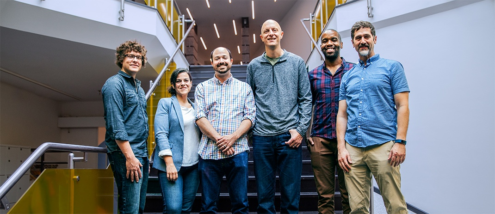

About Us
Topper Bowers is an entrepreneur and engineer with over 20 years experience building software people want. He combines deep technical knowledge with proven executive skills. He consistently pursues tech that betters people’s lives—whether he’s designing user interfaces, managing world class teams, or building high volume distributed systems for large nonprofits and Fortune 50 companies. He’s a former Y-Combinator founder (Summer 2012) with deep knowledge of distributed systems and distributed ledger technology.
Ben Lamothe is a software engineer and entrepreneur with over 10 years experience crafting distributed systems, artificial intelligence, and web application infrastructure. Driven by a passion for social justice, he is a former co-founder of a Y-Combinator company (Summer 2012) that built technology to help nonprofits mobilize supporters around causes they believe in. Ben was named a Forbes “30 under 30” entrepreneur in both 2012 and 2013, and he holds a Theoretical Mathematics degree from MIT.
Stephanie Mello is a product marketer with over 15 years experience helping organizations educate, inspire and engage their audiences. Specializing in multi-platform marketing solutions (including authoring US Patent: #8,439,759), her strategic vision and tenacious execution have driven massive increases in audience adoption, many thousand channel subscriptions and more than $60mm in bottom-line revenue lifts (at scale). Building teams, systems and solutions from scratch, she’s trained in the fine art of scrappy and agile success and thrives when she’s making something great to share with the world.
Andrew Holz is an experienced technology executive with 20+ years experience building kickass development teams large and small. Most recently, as SVP of Product and Engineering at Vitals, he has overseen the creation and delivery of enterprise products to health plans with revenue growth of over 300%. Before joining Vitals, Andrew was COO of eCaring, a mobile healthcare startup for caregivers and providers. Earlier in his career, he worked at Bell Labs as a systems engineer in the loop surveillance AI group and founded Icarus Productions, a mobile gaming company.
David Frey has been dealing with the concepts and logistics of derivatives, contracts, liquidity and exchanges for over 20 years. With a background in equity options market making and teaching options theory, he has most recently restructured the options infrastructure at a major wirehouse while acting as the contact point across institutional trading for complex hedging situations and new asset acquisition. Prior to that, David co-founded a unique business line specializing in securities lending trading reversal/conversion spreads between several bulge bracket stock loan desks and institutional options trading desks.